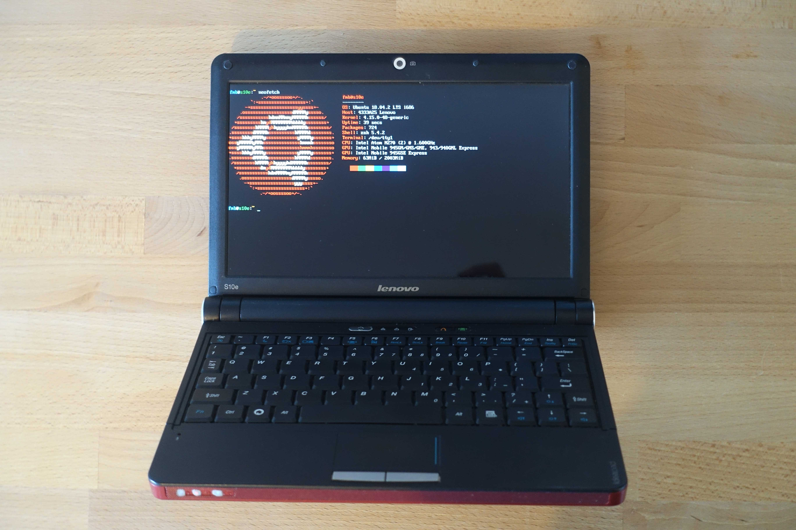

The Lenovo S10e
The S10e is a subnotebook released by Lenovo in 2008. It was the laptop used in a short-lived government program to provide all Australian public school students with a computer which they could use both at home and at school. I was one of the 2009 year 9 cohort which received them.
I stumbled across this relic again a few months ago and remembered how much I loved the thing. It is virtually indestructible, has a replaceable battery(!!), manages to fit a surprisingly ergonomic keyboard and respectable IO into a very small form factor, and has a bold metallic-flake maroon finish.
Unfortunately, the computer has one major issue preventing me using it: it has a heavily restricted version of Windows 7 (which does not even boot anymore) installed and a BIOS supervisor password that I do not know.
With a 1.60 GHz single core Intel Atom CPU and 1GB of RAM, many would argue it is just not worth the hassle. And they would probably be right. But for 4 years this thing withstood daily computer abuse and still stubbornly refused to let me install anything or play any of my favourite flash games. I've got a soft spot, and a lot of respect, for this little laptop. And now perhaps I can give it a new lease on life, and finally get past its stubborn restrictions.
The BIOS problem
Booting to the internal hard drive gives the 'Windows failed to start' screen. Safe mode is disabled by the administrators, and the repair tool does nothing. Installing a fresh copy of Windows (or any other OS) would require changing the boot order, which is impossible without access to the BIOS. So, my first approach is to try and remove the BIOS supervisor password.
The main options I found for doing so are- resetting the BIOS password with a master password,
- wiping the CMOS memory, or
- re-flashing the BIOS.
Some manufacturers allow a master password to reset a supervisor password on the BIOS. This master password is obtained by hashing some code to produce the password. Usually, the code is either shown to the user upon three failed password attempts, or is some identifier unique to the computer like its serial number. Once you have it, you can put it through an online master password hashing algorithm to find the password. Unfortunately, three incorrect passwords just temporarily disabled the system, and neither the serial number nor any other number printed on the computer created a valid password. So, no hashed master password that I could find.
To reset the CMOS memory, one has to locate the CMOS battery and either remove it for 10-15 minutes, or find and short the reset pins, or maybe both depending on your hardware. However, most subnotebooks, and netbooks generally, store the BIOS password on some hidden integrated circuit as an added measure of security for such portable devices. This proved true for the S10e, so no removing the BIOS password via the CMOS.
Finally, there was the option of re-flashing the BIOS. I was already feeling very out of my depth by this point, and a quick read of Alan Norton's article (along with a mental tally of each of the little mistakes I'd made so far in this project) was enough to persuade me that I was nowhere near qualified to try this. A single small mistake, and I would have a newly fried motherboard rather than a potentially salvageable computer. I did have a look for viable BIOS firmware, but there were none I was sure enough about. I didn't manage to get rid of the BIOS password, this was as far as I got.
But in taking apart and reassembling the laptop to remove the CMOS battery, I had noticed what might be a pretty significant flaw in the laptop's thus far formidable security: its hard drive.
The hardware solution
The hard drive actually slips out of its enclosure very easily once you find your way past a bit of tape threatening very serious high school trouble if tampered with and a couple of torx security screws. I was pretty worried there would be some kind of check on boot that the hard drive hadn't been swapped out, or even that the OS installation matched some preset value. Without being able to do much about the second problem, I decided to try and install a different OS on the hard drive and see if it would boot.
I took the hard drive out, connected it up to my MacBook with a SATA to USB-C adapter, and used balenaEtcher to install a minimal Ubuntu installer image on the drive. I plugged it back into the S10e, and lo and behold, it booted!
The rest of the installation process was simple, and a bit anticlimactic. After a small problem with Linux partitions, the Lenovo S10e is living its brand new life as a CLI (Command Line Interface) only Ubuntu laptop that I actually spend a silly amount of time on.
 Lenovo S10e running CLI Ubuntu.After all that, the laptop's strongest security feature was some sticky tape with a few scary words written on it.